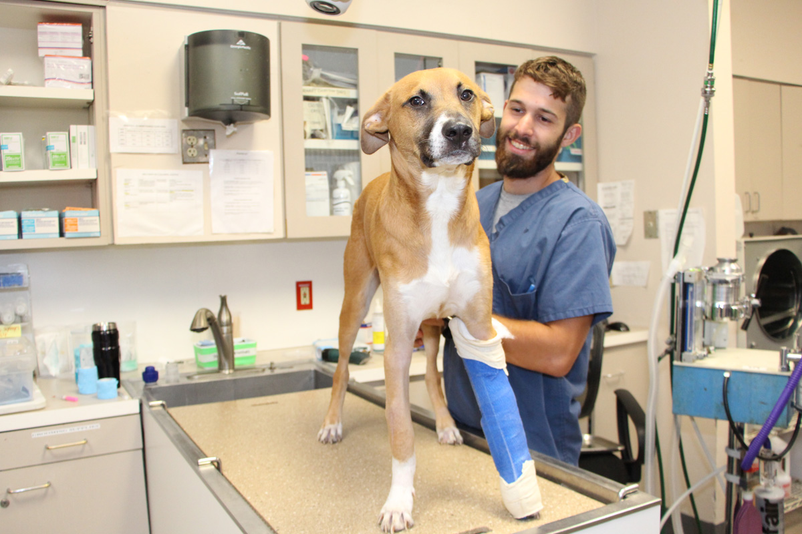

|
|
 |
M.V.Sc. Regd.No.APSVC.No.02927, Canine Care Centre, Door.No. 39-10-5, Muralinagar, Near BVR Function Hall, Visakhapatnam-07, Andhra Pradesh, Mobile: +91-9849644265
Mvsc Hycan Pet Clinic, H.No: 3-5-86/94/205; Supraja Abode Apts, Ramanthapur, Hyderabad. Mobile: +91-9866491727
B-203, 5th Avenue, Sainikpuri, Secundrabad-500094; Ph: 04027111556; Mob:919885531551; email: drgramarao@gmail.com
Santosh Pet Clinic, Opp.Govt.Veterinary Hospital, Near Judge Court, Prakasam Road, Visakhapatnam-530020; Ph: 8790996756 / 8790996774 / 7799551175; E-Mail: rajeshvettuni@gmail.com ;Timings: From Monday To Saturday - 6pm To 9pm; On Sunday - 10pm To 1pm.
BVSc&AH., MVSc., Regn. No. 0444, Veterinary Physician, BLUPLUS PET CLINIC, C-39, Sharadha Theatre Lane, A.S.Rao Nagar - Sainikpuri, HYD - 62 (Daily: 6pm - 9pm ** Sunday: Closed), Ph: 27162636, 27121739, Cell: 94400-24638, E-mail: drgpraju@gmail.com
M.V.Sc. Regd.No.APSVC.No.01759, Pet Care Clinic, Shop No.120, Mangalagiri Complex, Besides CMR Shopping Mall, New Gajuwaka, Vishakapatnam-26, Mobile: +91-9849423280
Harsha's Pet Clinic, #3-42, Beside Sai Sapthapadi Vet Distributors, Opp.Veterinary Hospital,Baji Junction, Gopalapatnam, Visakhapatnam, Ph: 9848036048, email: harshaspetclinic@gmail.com
B.V.Sc AH ;M.V.Sc[surgery] Canine Care Clinin, Near Sunday Market, Pogathota, Nellore, Andhra Pradesh - 524001. Ph: 333828 (off) / 329038 (res)
Pet & Vet (A house of Veterinary concern) We are running a veterinary clinic where we have an OPD, Operation Theatre, Medicines, Vaccines, Dog accessories, cr�che for dogs etc. Dewan House, Zoo Narengi Road, Guwahati-781021, Assam. Phone: +91-361 2417733. +91-9954748384. Email: petvet_ghy@yahoo.co.in
B.V.Sc.&A.H., M.I.S.V.S. Veterinary Surgeon Ex. Director, People for Animals Hospital, Gurgaon Ex. Senior Consultant, Sanjay Gandhi Animal Care Centre, New Delhi Ex. Veterinary Surgeon, Animal Help Foundation, Ahmedabad ;
Clinic 1: Zila Parishad Market, Juran Chapra, Muzaffarpur, Bihar. Timings: 3 PM - 8 PM ; Sunday OFF. Clinic 2: Nayatola, East of L. S. College Main Gate, Muzaffarpur, Bihar. Timings: 9 AM - 1 PM; Monday OFF. Contact No.: 9334680477, 9162107770.
(Listing Updated on 25th January 2015)
BVSc, AH, MVSc, & Ex.Veterinary surgeon of SGAC. Clinic address is Dog Care Centre, Alpana Market, Patliputra Colony, Patna-14
B.V.Sc. & A.H., Retd. Deputy Director Animal Husbandry Department Bihar; New Market, Kalpana Talkies Road, Kahalgaon, Bhagalpur, Bihar - 813203, Ph: 09973379077
B.V.Sc. & A.H. Pets planet, Address : Lane Opp: IOC Petrol Pump .Near Sudama Bhawan, Boring Road Crossing, Patna-800001, Bihar
BVSc&AH , DGO (IVRI ) Dog-Clinic & Computerised Diagnostic Laboratory. No.1547 sector-21, Panchkula. Chandigarh. 91-172-2561546 (o) +91-9814203500
B.V.Sc.&AH.. Pets Clinic, # 3248, Sector 47 D, Chandigarh-160047, Ph: 0172631232, E-Mail: vets1@rediffmail.com
BVSc.AH, Royal K-9 Pet care clinic, #141,sec -11 A, Chandigarh-161001, Ph: 9876200969, 2747172 E-Mail: royal_k9@hotmail.com
MVSc (Surgery & Radiology) Pet Smart Clinic, H.NO 1155, SEC-21-B, Chandigarh-160021, Ph: 0172-713859 / 724557 0172-701869
BVSc&AH Dog and Cat Clinic, 7/17, Aditya Complex, Preeth Vihar, Delhi -110092, India. Ph: 91-(0)11-2213941 (Off), (0)98102-61785 (Mob) Fax: 2219524 Email: dr_ajaysood@yahoo.com
B.Vsc& A.H;M.VsC. Petaids Veterinary Center, N-29, B, Jangpura Extension, 8 CSC, Kaka Nagar, New Delhi-110014, India. Ph: 4320055, 6947393, 4311844, anilsoodvet@hotmail.com
M.V.Sc.(Gynae & Obstet.) Pets Clinic, LG-12, Gomes Catao Complex (near Cine Alankar), Mapusa, Goa 403507. 845/B-6, St. Mary's Colony, Miramar, Panjim, Goa 403001. Ph: 91-0832-250527 / 91-0832-221681 e-mail: aksingh@goatelecom.com
BVSC&AH PFA, flat no.6, Gaur apts, Vasco Goa-403802, Ph: 0832530393, 0832530393, E-Mail: sudhir6277@rediffmail.com
B.V.Sc. & H Clinic Pet care Agrawal's, SB/95 Avishkar Complex, Old Padra Road, Baroda, Gujarat-390020 India, Ph: 323411, 281995/304185, e-mail: dradeshpetcare@yahoo.com
(B.V.Sc & A.H) Helping Hands For Pets - B/19, Shreeji Bunglows, Opposite High Way Mall, Chandkheda, Ahmedabad. Mo: 98251 79251; Email id: vetydr_ashish@yahoo.com
B.V.Sc & A.H City Dog Clinic, H.no-567, Sec-8, Panchkula(134109), Haryana. Landline:0172-2574123, Mobile:9814948474, Website: www.citydogclinic.net Email: citydogclinic@gmail.com All surgeries (major and minor). Fully supported by laboratory and radiological centers for quick diagnosis and prompt treatment.
B.V.Sc & AH(hau) 168/16 rup-house Shivaji Nagar, Gurgaon, Haryana-122001, Phone: 0124-2323040, E-Mail: gauravatri@hotmail.com
B.V.Sc. & A.H. A/42 Bharat Nagar, Tallab Tillo, Jammu-180002; Ph: +91-9419892939, +91-9622222297
MVSc (Surgery and Radiology) 232/Sector-6, Channi Himmat, Jammu-180015, J&K, Ph: 990690656, email: ankurvets@gmail.com
BVSc &AH Shalimar/Rainawari Srinagar J&K; email: vetanwar@gmail.com Ph: +919697902270
M.V.Sc Clinical Medicine H.No 55-C lane no 7 Shiv Nagar, Jammu Tawi Jammu & Kashmir - 180005, India Ph: 543914 (Code not given)
MVSc (surg.) Petcare Centre, Cirondi,Morabadi,Ranchi-7, Ph: +91-9470959346
B V Sc & A H, Veterinary Consultant, Veterinary Hospital, Tata Steel, Jamshedpur Clinic: Doggie Oye, Millennium Tower, R Road , Bistupur, Jamshedpur. Ph-0657-6500516, Mob-9431348377 e mail - drdkmahato@yahoo.com
MVSc (Surgery and Radiology), Assistant Professor of Surgery, Quarters no A3, Veterinary College Campus, Mannuthy ,Trichur, Kerala-680651, India.
(Phd) Dept of Clinical Medicine,College of Veterinary and Animal Care , Thrissur India Ph: 91 -(0)487-372210
PetCetera Small Animal Clinic, 32 Bizz-Bay, Near Pinnacle Ridge Gate, NIBM-Undri Road, Kondhwa Khurd, Pune - 411048; Phone: +91 8975127200; Mobile: +91 9527356059; Email: petceteraclinic@hotmail.com
1244, Apte Road, Opp. Shruti Mangal Karyalaya, Deccan Gymkhana, Pune 411004. Ph: 321473
M.V.Sc (Dairying), PGDRD, Diploma in Management Specialist in Veterinary Hospital, Bhawanipatna, Kalahandi. Bhawanipatna, Kalahandi District, Orissa. Email: panda_kallol@rediffmail.com drkkpanda@gmail.com Mob: 09437151766
Head, Department of Medicine, Orissa Veterinary College. I have a pet clinic named Dog Poly Care located at Chandrasekharpur, Bhubaneswar. Email: rcpatra@gmail.com
Supreet Dog Clinic, 10 BVS market, opp. Essma, Putlighar Chowk, Amritsar. Phone: 09876436116, 0183-2226116; Email: dramole@gmail.com
B.V.Sc & A.H and Dr.(Mrs.) Mamta Singh M.V.Sc gm's Dog Clinic, Opposite Street no. 3, Krishna Nagar, Khanna, Ludhiana,Punjab.
reg. no.: 3779 (RVC) Contact no: +91- 9694464511, email: trivets09@gmail.com Udaipur, Rajasthan Hari Om, Animal Husbandry Diploma Program (RAJUVAS) No.68, Subhash Nagar A, Jodhpur Road Near PHED Office, Pali, Rajasthan - 306401 Mobile: 9509042277 Email: hariomyadav277@gmail.com
Pet Clinic, 148, Civil Lines, Bareilly 243001, Ph: 91-(0)581-428924
B.Vsc&A.H Pet care clinic, 69-P, Pandav Nagar, Agra, Kumar Agro, Ramghat Road, Aligarh, U.P-202001, India, Ph: 0571 480182 / 0562311891 e-mail: kumaragro@rediffmail.com
18, Raja Dinendra Street, Calcutta- 700009 Phone Nos : 91-(0)33-3505877 / Mobile : 9831095502 email : partha@onlysmart.com Timings : 10 a.m.-1 p.m. / 6 p.m.- 9.30 p.m. (Sunday evening closed) Vets : Dr. S.K.Saha / Dr.Aparajita Chakraborty / Dr. Bholanath Mukherjee / Dr. Subir Bhattacharya
# 126, New Tillygunge, P.O. Purba Putiary, Calcutta, India - 700093 Ph: 91-(0)33-4318507 / 4313405
B.V.Sc. & A.H. (Cal) Pet Lovers Clinic, P- 164, CIT Road, Calcutta - 700010 India. Ph: 91-(0)33-3532267
(ISO 9001:2008 Certified) B49, Narkel Bagan, Kamdahari Kolkata 700084, West Bengal Ph: (033)-6502-6566 / +91-9674652965 / 9874666047 E mail- aarogya_pet_clinic@mail.com
P.G.(Moscow) 529, Dum Dum Park, Calcutta 700055, Ph: 91-(0)33-5506143